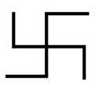

Etrafı ajanlarla sarılı Amerika Birleşik Devletler Başkanı arabasına bindi ve arka koltuğa oturdu. Karanlık, silik bir sabahtı. Kimse tek kelime etmemişti. Bir süre yol aldılar, önceki gece yağan yağmurdan hala ıslak asfaltta lastiklerin sesi duyuluyordu. Her zaman yaşanan sessizlikten daha tuhaf bir sessizlik vardı limuzinde.
Bir süre sonra Başkan konuştu:
“Hey, bu yol havaalanına gitmez.”
Ajanlar cevap vermediler. Başkan için bir tatil programlanmıştı. Kendi evinde iki hafta. Özel uçağı havaalanında bekliyordu.
Yağmur çiselemeye başladı. Yine yağacak gibi görünüyordu. Başkan dahil herkesin üstünde ağır paltolar, başlarında şapka vardı. Abranın olduğundan daha dolu görünmesine neden oluyordu. Soğuk ve kesintisiz bir rüzgâr esiyordu dışarıda.
“Şoför,” dedi Başkan, “sanırım yanlış yola girdin.”
Şoför cevap vermedi. Ajanlar önlerine bakmaya devam ettiler.
“Baksanıza,” dedi Başkan, “biriniz şuna havaalanına giden yolu tarif eder mi?”
“Havaalanına gitmiyoruz,” dedi Başkan’ın solundaki ajan.
“Havaalanına gitmiyor muyuz?” diye sordu Başkan.
Ajanlar yine cevap vermediler. Çiseleyen yağmur sağnağa dönüşmüştü. Şoför silecekleri çalıştırdı.
“Nedir bu?” diye sordu Başkan, “Neler oluyor?”
“Haftalardır yağıyor,” dedi şoförün yanında oturan ajan, “biraz güneş görsem çok sevineceğim.”
“evet, ben de,”dedi şoför.
“Yolunda gitmeyen bir şeyler var,” dedi Başkan. “Açıklama talep ediyorum.”
“Hiçbir şey talep edecek konumda değilsin artık,” dedi Başkan’ın sağında oturan ajan.”
“Yoksa?”
“evet, öyle,” dedi ajan.
“Suikast mı?” diye sordu Başkan.
“Hayır. Suikastların modası çoktan geçti.”
“Ne öyleyse?”
“Lütfen. Tartışmama emri aldık.”
Birkaç saat boyunca yol aldılar. Yağmur sürüyordu. Kimse konuşmamıştı.
“Şimdi bir daire daha çiz ve sap,” dedi Başkan’ın solundaki ajan, “takip edilmiyoruz, yağmur işe yaradı.”
Araba boş alanda bir daire çizdikten sonra dar bir orman yoluna saptı. Tekerlekler çamurlu yolda zaman zaman patinaj yapıyor, lastikler yolu tekrar kavrayınca araba yola devam ediyordu. Sarı yağmurluk giymiş bir adam elindeki el feneriyle arabayı açık bir garaja yönlendirdi. Etrafı ağaçlarla çevrili izbe bir yerdi. Garajın solunda küçük bir çiftlik evi vardı. Ajanlar arabaların kapılarını açtılar.
“İn,” dediler Başkan’a. Başkan arabadan indi. Etrafta sarı yağmurluklu ve el fenerli adamdan başka kimse olmamasına rağmen Başkan’ın etrafını sardılar.
“Şu işi neden burada bitirmediğimizi anlamıyorum,” dedi sarı yağmurluklu adam, “böylesi kesinlikle daha riskli.”
“Emirler,” dedi ajanlardan biri. “O’nu bilirsin. Her zaman sezgileri ile hareket etmiştir. Şimdi eskisinden de fazla.”
“Çok soğuk. Bir fincan kahve içecek vaktiniz var mı? Kahve hazır.”
“Çok düşüncelisin. Yol uzun sürdü. Diğer araba hazırdır herhalde?”
“Elbette. Tekrar tekrar bakımdan geçti. Programın on dakika önündeyiz aslında. Yoksa kahve önermezdim. Dakiklik konusunda ne kadar titiz olduğunu bilirsin.”
“Pekala. İçeri girelim.”
Başkan’ı aralarında tutarak çiftlik evine girdiler.
“Şuraya otur,” dedi ajanlardan biri Başkan’a.
“İyi kahve,” dedi sarı yağmurluklu adam, “elde çekilmiş.”
Kahve servisini yaptıktan sonra kendine de bir fincan koyup oturdu. Sarı yağmurluğu hala üstündeydi, sadece başlığını çıkarıp fırının üstüne fırlatmıştı.
“Oh,” dedi ajanlardan biri, “Kahve nefis.”
“Süt ve şeker?” diye sordu ajanlardan biri Başkan’a.
“Olur,” dedi Başkan.
Eski araba pek geniş sayılmazdı ama bir şekilde sığıştılar, Başkan yine arka koltuktaydı. Eski araba da çamurda ve çukurlarda patinaj yapıyor, ama bir şekilde yola devam ediyordu. Sessizlik hakimdi yine. Sonra ajanlardan biri sigara yaktı.
“Lanet olsun, bırakamıyorum şu mereti!”
“Kolay iş değil, hepsi bu. Takma kafana.”
“Takmıyorum. Kendimden iğreniyorum sadece.”
“Boşver şimdi. Tarihi bir gün bugün.”
“Hem de nasıl!” dedi sigara içen.
Eski bir pansiyon binasının önünde durup park ettiler. Hala yağıyordu. Bir süre arabada oturdular.
“Pekala,” dedi şoförün yanında oturan ajan, “indirin. Kimsecikler yok.”
Başkanı aralarına alıp kapıdan soktular, üçüncü kata çıkardılar. 306 numaralı odanın önünde durup kapıyı çaldılar. Şifre: bir vuruş, es, üç vuruş, es, iki vuruş.
Kapı açıldı, ajanlar Başkan’ı içeri soktular. Sonra kapıyı kilitleyip sürgüyü taktılar. Üç adam bekliyordu içeride. İkisi elli yaşlarında. Üçüncü adamın üstünde eski bir işçi gömleği, ona çok uzun gelen ikinci el bir pantolon, ayağında on dolarlık buruşuk ve boyasız ayakkabılar vardı. Odanın ortasında salıncaklı koltukta oturuyordu. Seksen yaşlarındaydı ama gülümsüyordu, ve gözleri hiç değişmemişti; burnu çenesi, alnı da pek değişmemişti.
“hoş geldiniz, sayın Başkan. Tarihi, Bilimi ve Sizi uzun zamandan beri bekliyorum ve üçünüzde buradasınız, tam planladığımız gibi, bugün.”
Başkan salıncaklı koltukta salınan ihtiyara baktı. “Aman Tanrım! Sen, sen.”
“Beni tanıdınız! Bazı yurttaşlarınız benzerliğin şakasını yaparlardı, ben olduğumu anlayamayacak kadar aptaldılar.”
“Ama kanıtlanmıştı, sen.”
“Elbette kanıtlanmıştı. Sığınak: 30 Nisan, 1945. öyle olmasını istedik. Sabırla bekledim. Bilim bizden yanaydı ama zaman zaman tarihi hızlandırmamız gerekti. Doğru adamı istiyorduk. Doğru adam sizsiniz... Diğerleri uygun değillerdi -benim siyasi felsefemden çok uzaktılar. Siz beklediğimiz adamsınız. Sayenizde her şey çok daha kolay olacak. Ama dediğim gibi tarihi biraz hızlandırmak zorunda kaldık, yaşımı düşünürseniz, mecburdum.”
“yoksa.?”
“Evet, Başkan Kennedy’yi ben öldürttüm. Sonra da kardeşini.”
“Ama ikinci suikasta ne gerek vardı?”
“O genç adamın seçimi kazanacağına dair bilgi vardı elimizde.”
“Beni ne yapacaksınız? Bana bir suikast yapılmayacağı söylendi.”
“Sizi Doktor Graf ve Doktor Voelker ile tanıştırmak isterim izninizle...”
İki adam Başkan’ı selamlayıp gülümsediler.
“Bana ne yapacaksınız?”
“Lütfen. Bir dakikanızı rica edeceğim. Adamlarıma birkaç şey sormam gerekiyor. Karl, Benzer’le her şey yolunda gitti mi?”
“Sorun yok. Çiftlikten telefon ettik. Benzer havaalanına tam vaktinde varmış, sonra da hava muhalefetinden dolayı uçuşu yarına ertelediğini açıklamış. Sonra da arabayla dolaşmak istediğini söylemiş, yağmurda arabayla gezmeyi sevdiğini.”
“Ya sonra?”
“Benzer ortadan kaldırıldı.”
“Güzel. İşe koyulalım öyleyse. Tarih ile Bilimin buluşma zamanı geldi.”
Ajanlar Başkan’ı kaldırıp iki ameliyat masasının birine götürdüler. Soyunmasını söylediler. Yaşlı adam diğer ameliyat masasına gitti. Doktor Graf ile Doktor Voelker ameliyat önlüklerini giyip hazırlıklarını yaptılar.
İki adamdan daha genç olan ameliyat masasından kalktı. Başkan’ın giysilerini giydikten sonra kuzey duvarındaki boy aynasına baktı. Beş dakika kadar seyretti kendini. Sonra döndü.
“Mucizevi! Ameliyat izi bile yok, nekahat süresi yok. Beyler, tebrikler! Nasıl yapıyorsunuz bunu?”
“Biliyorsun Adolf,” dedi doktorlardan biri, “son yıllarda tıp.”
“DUR! Bana asla ‘Adolf’ diye hitap edilmeyecek... zamanı gelinceye kadar asla!... O güne kadar Almanca konuşmak yok. Ben şimdi Amerika Devlet Başkanıyım!”
“Evet, Sayın Başkan!”
Sonra elini üst dudağına götürdü:
“Bıyığımın eksikliğini hissediyorum ama!”
Güldüler.
Sonra sordu:
“Yaşlı adama ne oldu?”
“Yatağa yatırdık. Yirmi dört saatten önce uyanmaz. Şu anda her şey, tüm ameliyat aletleri parçalanıp eritildi. Tek yapmanız gereken buradan çıkmak.” dedi Doktor Graf. “Ama Başkanım, bana sorarsanız bu adamı ortadan.”
“Hayır, size söyledim, o zavallının teki artık. Çeksin o da benim gibi!”
Yatağa gidip adama baktı. Seksen yaşlarında, beyaz saçlı bir ihtiyar.
“Yarın onun evinde olacağım. Karısı sevişmemden memnun kalacak mı acaba?” küçük bir kahkaha attı.
“Kalacağından eminim, Führer. Bağışlayın! Lütfen! sevişmenizden çok memnun kalacağından eminim, sayın Başkan’ım”
“Çıkalım öyleyse. Doktorlar önden çıkıp yollarına gidiyorlar. Geri kalanlar, birer ikişer çıkıyoruz, sonra araba değiştirilecek ve Beyaz Saray’da iyi bir uyku çekilecek.”
Beyaz saçlı yaşlı adam uyandı. Odada yalnızdı. Kaçabilirdi. Yataktan kalkıp elbiselerini aramaya başladı. Birden boy aynasında yaşlı bir adam gördü.
Hayır, diye geçirdi aklından, aman allahım, hayır!
Kolunu kaldırdı. Aynadaki adam da kolunu kaldırdı. Aynaya doğru yürüdü, yaşlı adam büyüdü. Ellerine baktı -buruşuk, onun elleri değil! Ayaklarına baktı. Onun ayakları değil! Onun vücudu değil!
“Aman Allahım!” dedi yüksek sesle, “AMAN ALLAHIM!”
sesini duydu sonra. Sesi bile onun sesi değildi. Ses tellerini bile nakletmişlerdi. Parmaklarını boğazına götürdü, başında gezdirdi. İz yoktu. Tek iz bile! Yaşlı adamın elbiselerini giydi, koşarak merdivenden indi. İlk çaldığı kapının üstünde “Ev sahibesi” yazıyordu.
Kapı açıldı. Yaşlı bir kadın göründü.
“Evet, Bay Tilson?” diye sordu.
“Bay Tilson mu? Bayan, ben Amerika Birleşik Devletler Başkanıyım! Bu acil durum!”
“Bazen çok komiksiniz, Bay Tilson!”
“telefon nerede?”
“Her zaman olduğu yerde, Bay Tilson! Giriş kapısının solunda.”
Ceplerini yokladı. Bozuk para bırakmışlardı. Cüzdana baktı. On sekiz dolar. Telefona para attı.
“Buranın adresi nedir bayan?”
“Bay, Tilson, adresi biliyorsunuz. Yıllardan beridir burada yaşıyorsunuz. Bugün çok tuhaf davranıyorsunuz. Ayrıca size söylemek istediğim bir şey daha var!”
“Evet, evet, nedir?”
“Kirayı bugün ödemeniz gerekiyor!”
“Bayan, lütfen! Adresi söyleyin!”
“Sanki bilmiyorsunuz! 2435 Shoreham Drive.”
“Alo,” dedi telefona, “taksi mi? Bir taksi istiyorum, 2435 Shoreham Drive. İlk katta bekliyorum. Adım mı? Şey, tamam, adım Tilson.”
Beyaz Saray’a gitmenin bir anlamı yok, diye geçirdi içinden, orayı ele geçirdiler, en büyük gazeteye gideceğim. Her şeyi anlatacağım, editöre anlatacağım, her şeyi.
Diğer hastalar ona güldüler. “Şu adamı görüyor musun? Şu diktatörü anımsatan, adı neydi, bu biraz daha yaşlı gerçi. Neyse, bir ay önce buraya geldiğinde Amerika Birleşik Devletler Başkanı olduğunu iddia ediyordu, şimdi pek söylemiyor. Gazeteleri okumaya çok meraklıdır ama. Gazete okumak için onun kadar istekli birini görmedim. Siyasetten anlar. Onu çıldırtan da bu olmuş galiba. Siyaset.”
Yemek zili çaldı. Bütün hastalar kalktı. Biri hariç. Hademelerden biri yanına gitti.
“Bay Tilson?”
Karşılık alamadı.
“BAY TİLSON!”
“Ne, evet?”
“Yemek saati, Bay Tilson!”
Beyaz saçlı yaşlı adam kalktı, ağır ağır yemek salonuna doğru gitti.